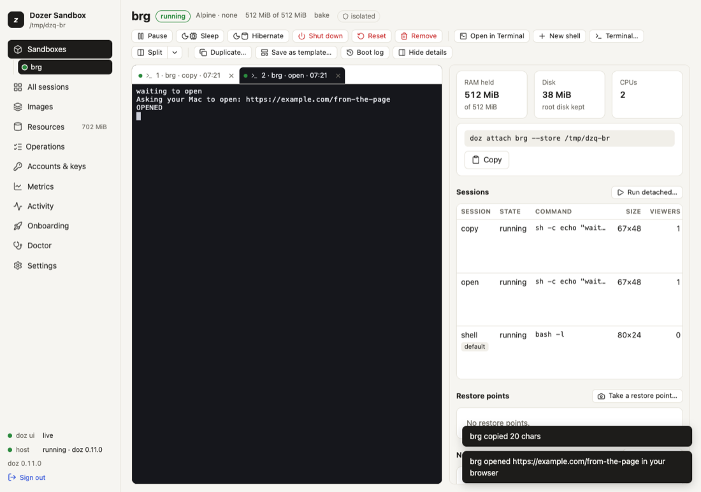

Chapter 11
Signing in from a sandbox
Many command-line tools sign you in through a web browser: they open a sign-in page, you sign in, and the provider sends your browser back to the tool on http://localhost:PORT.
On this page
Many command-line tools sign you in through a web browser: they open a sign-in page, you sign in, and the provider sends your browser back to the tool on http://localhost:PORT. A sandbox has no browser and its localhost isn't your Mac's — so Dozer bridges both: the page opens in your Mac's browser, and the redirect at the end finds its way back into the sandbox.
You rarely need this for Claude itself — Dozer supplies Claude's credential already (see Agents and accounts). It's for everything else an agent may sign in to: a cloud CLI, a SaaS tool's CLI, an MCP server's OAuth.
Concepts#
- The browser bridge. Inside every sandbox,
xdg-open— and$BROWSER,open,sensible-browser,www-browser— is Dozer's own small program. It hands an http or https address to your Mac, which opens it in your default browser. You're told every time:my-app opened https://example.com/docs in your browser. Nothing is printed into the session itself — the agent's screen stays exactly as it drew it; when an address is refused, the program that asked hears why (its error output and exit status). (Given a document in/workspaceinstead of an address, the same program opens that file on your Mac — see Opening workspace files on your Mac.) - The sign-in callback. When the address asks the provider to send the browser back to the sandbox's
localhost:PORT(itsredirect_uri), Dozer first opens your Mac'slocalhost:PORTand forwards it into the sandbox, then opens the page. The notice sayssign-in callback localhost:PORT forwarded (10 min). When your browser lands on the callback, the tool in the sandbox receives it and the sign-in completes. - It lasts the sign-in, no longer. The forward is on your Mac's loopback only (nothing else on your network can reach it), one per sandbox (a new sign-in replaces it), and it closes 3 seconds after the callback was answered, or after 10 minutes.
- Only while you watch. Like the clipboard bridge, it works while a terminal (yours, or a dashboard tab) is attached to the session.
Sign in#
- Attach to the session —
doz attach my-app,doz up, or a terminal in the dashboard. - Run the tool's sign-in command in the sandbox (for example
gh auth login --web,gcloud auth login, or the tool's/login). - Your Mac's browser opens the sign-in page, and a notice appears:
- in
doz attach, over the bottom row:my-app opened https://… · sign-in callback localhost:8765 forwarded (10 min); - in the dashboard, a message in the corner.
- in
- Sign in as usual. The browser's last redirect reaches the tool in the sandbox; the tool says it's signed in. The forward closes a few seconds later.

Programs that open a page without a sign-in (documentation, a report) just open in your browser.
What is refused (and said)#
- anything but
httpandhttps—file:,javascript:, custom schemes; - an address on the Mac's own loopback —
http://localhost:3000from inside a sandbox means the sandbox's own server, which your Mac's browser can't reach. (Tell the person the address; there are no general port forwards.) - more than 3 addresses in 10 seconds, or an address over 2048 characters;
- a callback port already in use on your Mac: the page still opens, and the notice says the sign-in can't come back.
Turn it off#
doz config set --sandbox my-app sandbox.browser_bridge off # this sandbox (applies at once)
doz config set sandbox.browser_bridge off # every sandbox without its own choice
doz create my-app --browser-bridge off … # from the start (or browser_bridge: off in doz_project.yaml)
doz config show --sandbox my-app # this sandbox's own values, and whose value each isOff, nothing opens and nothing is forwarded; the notice says the bridge is off. The agent is told either way, so it knows to print addresses for you instead.
Sign-ins and permissions#
The sign-in page opens on your Mac, outside the sandbox, so it doesn't need a permission. But the tool inside may need to reach the provider's API afterwards: allow it as a site (doz net allow my-app site:api.example.com). For Claude's own sign-in pages there is a Sign in permission (off in Standard); with the default key policy a sign-in inside a sandbox that uses a token or API key is refused on purpose. See What the agent can do and Agents and accounts.
Settings#
| key | default | what it does |
|---|---|---|
sandbox.browser_bridge | on | on: xdg-open reaches your Mac's browser and a sign-in's callback is forwarded. off: never. Per sandbox too. |
Limits and security#
- A sandbox can open web pages on your Mac. Every one is announced and rate-limited, and only http(s) pages that aren't on your Mac's own loopback. If you don't want that for a sandbox, turn the bridge off for it.
- The forward is narrow: one port, on your Mac's loopback, for one sign-in, at most 10 minutes. The address's query (which carries the sign-in's secret state) never appears in notices or logs — only the scheme, host and path.
- The bridge arrives with a sandbox's next start; a sandbox woken from an older version of Dozer gets it at its next session.
Troubleshooting#
| symptom | what to do |
|---|---|
| Nothing opens | Is a terminal attached to the session? Is the bridge on (doz config show --sandbox NAME)? Does the tool use xdg-open or $BROWSER? Some print the address instead — open it yourself. |
| "localhost:PORT is in use on this Mac" | Something on your Mac uses that port. Quit it, or use the tool's device-code sign-in if it has one. |
| The browser says it can't connect at the end | The forward closed (10 minutes) or the tool in the sandbox stopped waiting. Start the sign-in again. |
| The tool signs in but then can't reach its API | doz net NAME shows the refusal; allow the site. |
| "only http and https URLs are opened" | The program asked to open a file or another scheme; that's never bridged. |
- ← PreviousWhat the agent can do: permissions and the network
- Next →Restore points, duplicates and templates
Edit this page on GitHub · Chapter 11 of 25